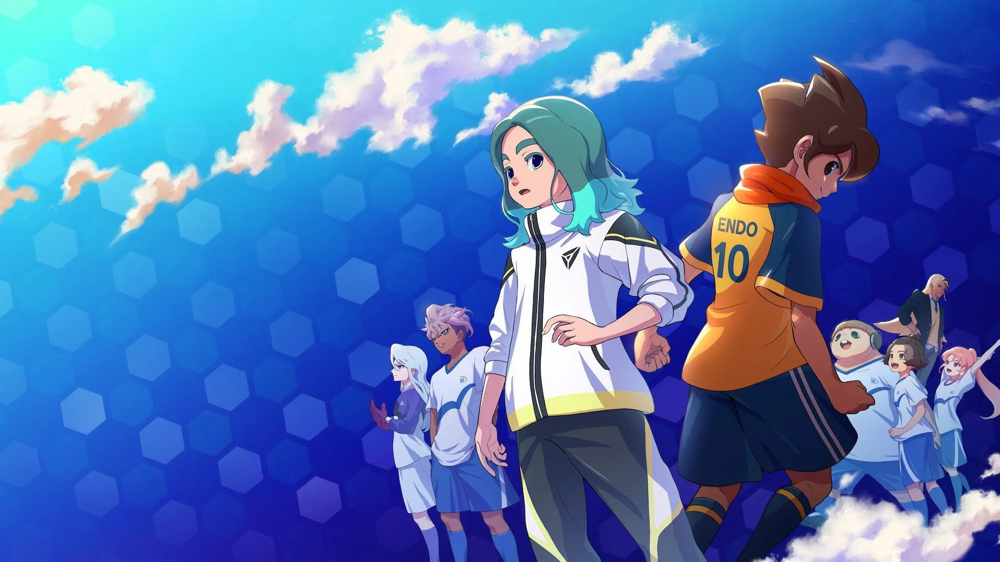
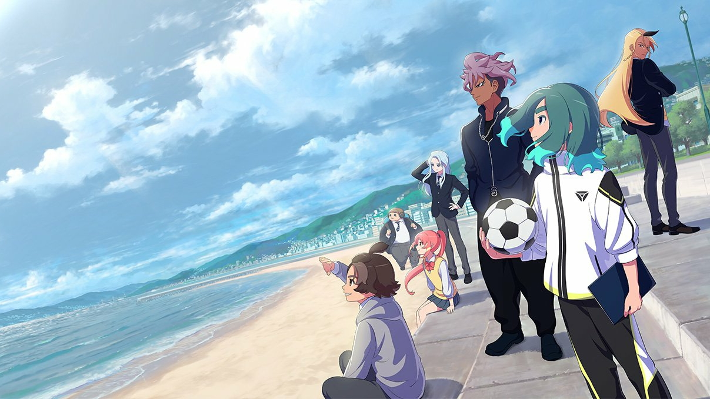
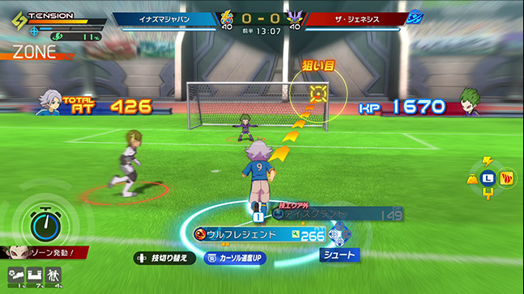

;
Présentation du jeu :
Un scénario inédit :

Oubliez Raimon pour un temps. L'histoire se déroule à Nagasaki et suit Unmei Sasanami, un
protagoniste
atypique qui ne peut plus jouer au football. C'est en tant que stratège de génie qu'il devra rebâtir
un
club oublié pour défier les champions en titre.
Le mode Chronique :
Un gameplay réinventé :

Le système de match a été entièrement repensé pour offrir une liberté totale ("Free-Form").
Affrontements
"Focus", jauge de tension et super-techniques spectaculaires : le gameplay est conçu pour être aussi
intense manette en main que sur écran tactile.